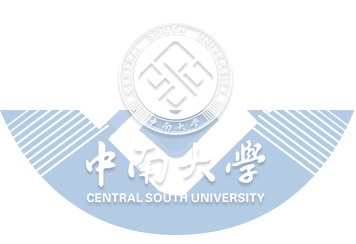

数字医疗 / 算法建模与数据科学
过去几年一直在做医疗和数据交叉方向的工作，主要把机器学习、强化学习、运筹优化等方法真正用到医院、药企和企业生产场景里。
工作内容通常覆盖一整条线：从科研申报、算法研发、工程落地，到项目交付和团队管理。常用 Python、SQL、Spark、Hive、Redis、Linux，也做过大模型相关的 RAG 与 LangChain 应用。

10+ 项省部级 AI 医疗项目申请书 · 6 项已公开发明专利 · 6 次行业竞赛获奖
带过 3 人 全职算法工程师团队和 8 人 国内外高校 Co-op 实习生
每个项目都有单独的介绍页签，点击左侧项目名查看背景、做法和结果。